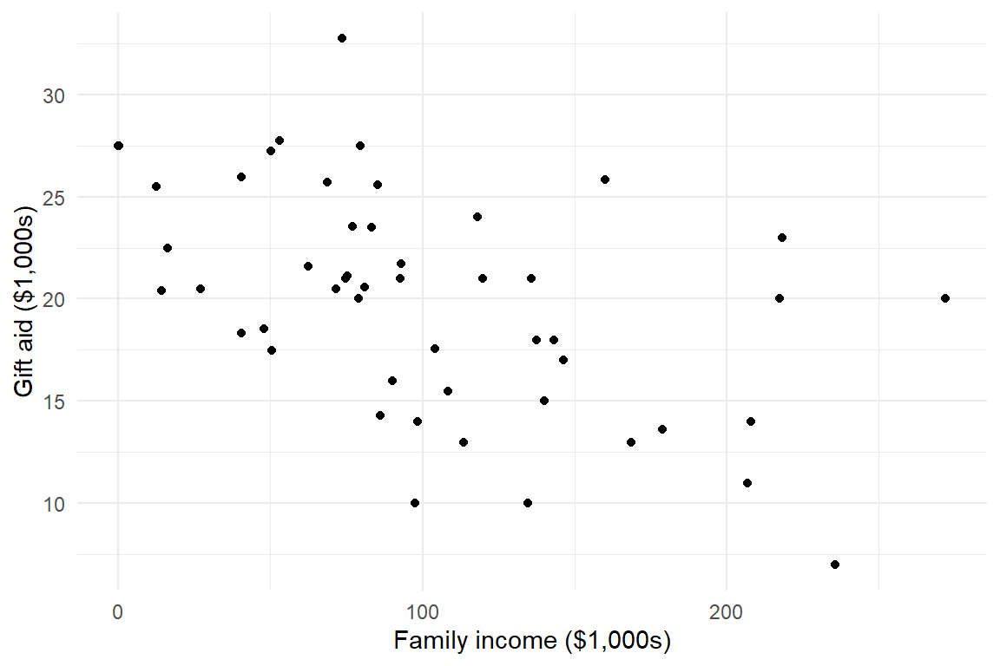
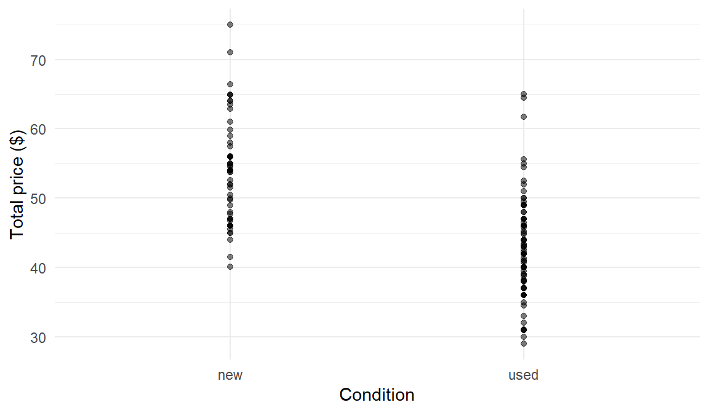
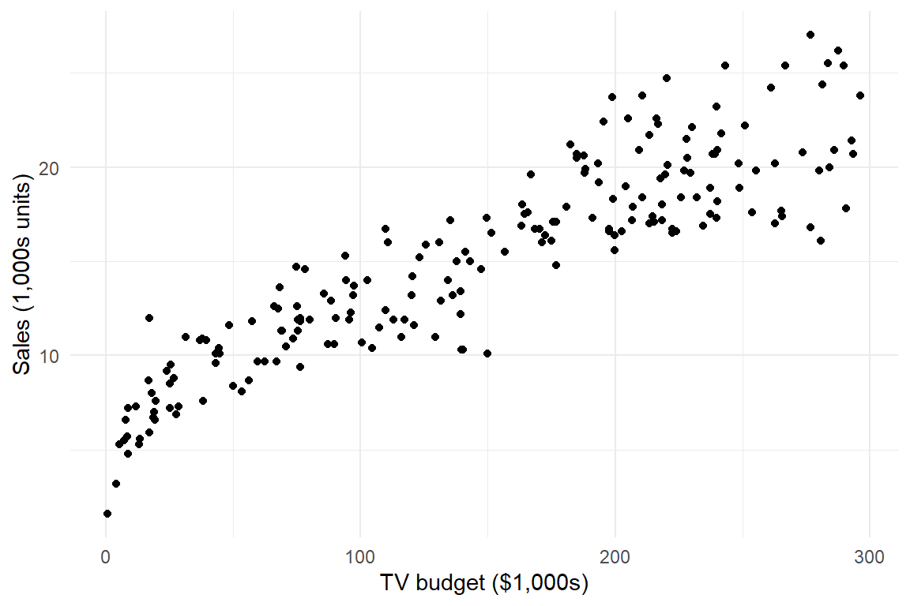
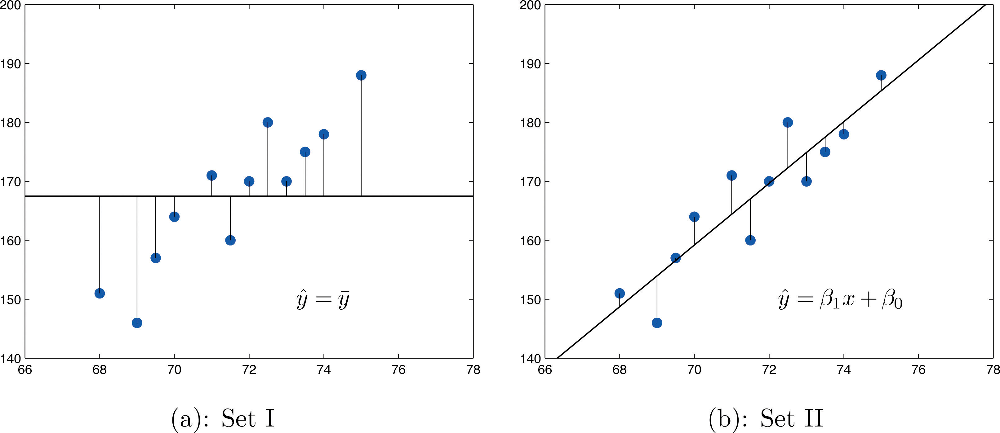

ECON 2B03, Winter 2026
Part D | Lecture 3
Chris Muris, McMaster University
Previously, we used descriptive statistics (mean, SD) to summarize a single variable.
Regression lets us study the association between two or more variables.
Goals:
Elmhurst College gift aid
gift_aid (scholarship/grant money) using family_income.
Elmhurst College gift aid (continued)
family_income, predicted gift_aid changes by \(\widehat\beta_1\) units.
Call:
lm(formula = gift_aid ~ family_income, data = elmhurst)
Residuals:
Min 1Q Median 3Q Max
-10.1128 -3.6234 -0.2161 3.1587 11.5707
Coefficients:
Estimate Std. Error t value Pr(>|t|)
(Intercept) 24.31933 1.29145 18.831 < 2e-16 ***
family_income -0.04307 0.01081 -3.985 0.000229 ***
---
Signif. codes: 0 '***' 0.001 '**' 0.01 '*' 0.05 '.' 0.1 ' ' 1
Residual standard error: 4.783 on 48 degrees of freedom
Multiple R-squared: 0.2486, Adjusted R-squared: 0.2329
F-statistic: 15.88 on 1 and 48 DF, p-value: 0.0002289Mario Kart auctions
total_pr (final auction price in $).cond (game condition: new or used).
Mario Kart auctions (continued)
new (\(x=0\)).
Call:
lm(formula = total_pr ~ cond, data = mk_df)
Residuals:
Min 1Q Median 3Q Max
-13.8911 -5.8311 0.1289 4.1289 22.1489
Coefficients:
Estimate Std. Error t value Pr(>|t|)
(Intercept) 53.7707 0.9596 56.034 < 2e-16 ***
condused -10.8996 1.2583 -8.662 1.06e-14 ***
---
Signif. codes: 0 '***' 0.001 '**' 0.01 '*' 0.05 '.' 0.1 ' ' 1
Residual standard error: 7.371 on 139 degrees of freedom
Multiple R-squared: 0.3506, Adjusted R-squared: 0.3459
F-statistic: 75.03 on 1 and 139 DF, p-value: 1.056e-14Exercise: Coefficient interpretation with a binary predictor
A study of Canadian workers in 2020 regresses hourly wage ($/hr) on an indicator union: \[\widehat y = 22.4 + 3.1 \times \texttt{union}\] where union = 1 for union members and union = 0 otherwise.
Interpret the intercept and the slope.
Advertising budgets
Sales (in thousands of units).TV (advertising budget in thousands of dollars).

Left panel uses \(\bar y\) (total variation).
Right panel uses the regression line (unexplained variation).
\(R^2\) measures the reduction in error.
The coefficient of determination (\(R^2\)) describes how well the line fits the data
It is the fraction of the sample variation in \(y\) explained by the linear relationship with \(x\)
Range: \(0 \le R^2 \le 1\)
Equivalent formulas (SZ 10.6):
Advertising budgets (continued)
summary(lm(...)), \(R^2\) is labeled Multiple R-squared.
Call:
lm(formula = Sales ~ TV, data = adv_df)
Residuals:
Min 1Q Median 3Q Max
-6.4438 -1.4857 0.0218 1.5042 5.6932
Coefficients:
Estimate Std. Error t value Pr(>|t|)
(Intercept) 6.974821 0.322553 21.62 <2e-16 ***
TV 0.055465 0.001896 29.26 <2e-16 ***
---
Signif. codes: 0 '***' 0.001 '**' 0.01 '*' 0.05 '.' 0.1 ' ' 1
Residual standard error: 2.296 on 198 degrees of freedom
Multiple R-squared: 0.8122, Adjusted R-squared: 0.8112
F-statistic: 856.2 on 1 and 198 DF, p-value: < 2.2e-16Sales is explained by TV advertising spending in this model.Exercise: Interpret R-squared
In a regression of wage on years of education, \(R^2 = 0.25\).
What does 0.25 tell us about the relationship?
About 25% of the variation in wages in the sample is explained by the linear relationship with education.
The estimated slope \(\widehat\beta_1\) is a statistic; it varies from sample to sample
We want to know if the population slope \(\beta_1\) is zero (no association)
\(H_0: \beta_1 = 0\) (no linear association)
\(H_a: \beta_1 \neq 0\) (two-sided association)
Test Statistic: \[T = \frac{\widehat \beta_1 - 0}{SE(\widehat{\beta}_1)}\]
Distribution: \(t\) with \(df = n-2\)
The standard error of the slope measures the precision of our estimate: \[SE(\widehat{\beta}_1) = \frac{s_\epsilon}{\sqrt{SS_{xx}}}\]
Precision improves (smaller \(SE\)) if:
Advertising budgets (continued)
Coefficients table gives the \(t\)-statistic and \(p\)-value for each coefficient.
Call:
lm(formula = Sales ~ TV, data = adv_df)
Residuals:
Min 1Q Median 3Q Max
-6.4438 -1.4857 0.0218 1.5042 5.6932
Coefficients:
Estimate Std. Error t value Pr(>|t|)
(Intercept) 6.974821 0.322553 21.62 <2e-16 ***
TV 0.055465 0.001896 29.26 <2e-16 ***
---
Signif. codes: 0 '***' 0.001 '**' 0.01 '*' 0.05 '.' 0.1 ' ' 1
Residual standard error: 2.296 on 198 degrees of freedom
Multiple R-squared: 0.8122, Adjusted R-squared: 0.8112
F-statistic: 856.2 on 1 and 198 DF, p-value: < 2.2e-16Exercise: Significance from a regression table
A regression of test score on hours of study gives \(\widehat\beta_1 = 2.8\) with \(SE(\widehat\beta_1) = 1.5\) and \(df = 18\).
Silicofluoride and lead
Shafer and Zhang, 10.8, Exercise 1
The data give the amount \(x\) of silicofluoride in water (mg/L) and lead \(y\) in blood (μg/dL) for \(n=10\) children.
The Task:
Raw Data:
| \(x\) | 0.0 | 0.0 | 1.1 | 1.4 | 1.6 | 1.7 | 2.0 | 2.0 | 2.2 | 2.2 |
|---|---|---|---|---|---|---|---|---|---|---|
| \(y\) | 0.3 | 0.1 | 4.7 | 3.2 | 5.1 | 7.0 | 5.0 | 6.1 | 8.6 | 9.5 |
Silicofluoride and lead (continued)
Step 1: Compute preliminary sums
Using \(n = 10\):
Silicofluoride and lead (continued)
Step 2: Compute sample means and sums of squares
Sums of squares:
Silicofluoride and lead (continued)
Step 3: Calculate the regression slope
Silicofluoride and lead (continued)
Step 4: Calculate the regression intercept
Silicofluoride and lead (continued)
Step 5: Assess the goodness of fit (\(R^2\))
Silicofluoride and lead (continued)
Step 6: Compute the standard error of the slope
Silicofluoride and lead (continued)
Step 7: Construct a 95% confidence interval for \(\beta_1\)
Silicofluoride and lead (continued)
Step 8: Calculate test statistic and conclude
Exercise: Significance
A regression reports a slope of 5.2 with a p-value of 0.08.
Is the association significant at the 5% level?
No, because \(0.08 > 0.05\), we fail to reject the null hypothesis of no association.
Exercise: Interpret \(R^2\)
In a simple regression of exam score on hours studied, the output gives \(R^2 = 0.64\).
Interpret this value in words.
About 64% of the sample variation in exam scores is explained by the linear relationship with hours studied, in this fitted model.
Exercise: Extrapolation
A regression line was fit using data on families with incomes between $20,000 and $150,000. A student uses the line to predict gift aid for a family with income $600,000.
Why should you be cautious?
This is extrapolation far outside the observed range of the data. Even if the line fits well in-sample, there is no reason to trust the same linear relationship that far beyond the data.
These slides started from J. S. Racine’s slides for ECON2B03 at McMaster University.
Readings are from
References